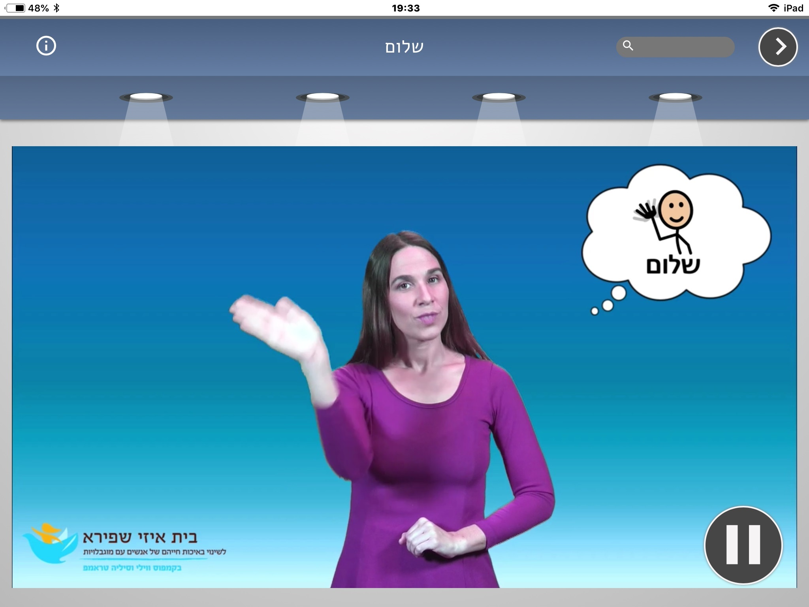
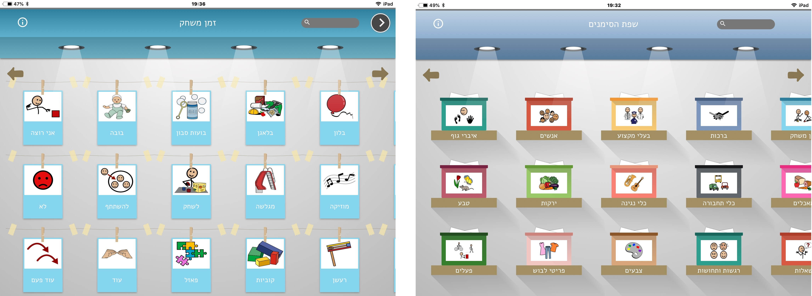

אפליקציה להיכרות ולמידה של סימנים בסיסיים המבוססת על שפת הסימנים הישראלית (שס"י). האפליקציה פותחה במיוחד עבור אנשים עם צרכים תקשורתיים מורכבים, היכולים להיעזר בסימנים ובג'סטות כאמצעי תקשורת תומכת וחליפית (תת"ח) להבעת רצונות, תחושות, מחשבות ורעיונות. זמינה למכשירי אייפד ואייפון וניתן להורידה בחינם
אפליקציה זו, נוצרה כחלק מסדרת האפליקציות המותאמות שלנו בשיתוף מרכז המחקר והפיתוח SAP Labs Israel, ואנו מאוד שמחים לשתף אתכם בתוצר מוצלח נוסף, פרי שיתוף הפעולה הזה! תודה רבה רבה לצוות המתנדבים המדהים של SAP Labs Israel, על שהתגייסו לפרויקט ותרמו מזמנם ומתחומי הידע המקצועיים שלהם לפיתוח האפליקציה!! בהזדמנות זו, גם נרצה לומר תודה רבה לאן ג׳ונסון- אוליס מחברת n2y, על הליווי וההכוונה בשילוב סמלי SymbolStix באפליקציה ותודה רבה רבה ללי דן, לאלה אוחוטין ולשירית כהן-קוקה על הייעוץ ועל התרגום לשפת הסימנים ולעברית מסומנת.
האפליקציה נולדה מתוך הצורך לאפשר לפעוטות ולילדים המטופלים בבית איזי שפירא ולבני משפחותיהם, להיחשף לסימנים וג'סטות באופן עצמאי. לאפשר רכישה של ג'סטות וסימנים, ללא תלות בצוות הגן או הכיתה. בדרך זו, אנו מאמינים כי הילדים שלנו ובני משפחתיהם, יוכלו ללמוד סימנים חדשים ולתקשר במגון סביבות. מרגש לחשוב שעכשיו כל מי שזקוק לאפליקציה וכל מי שרוצה להיחשף אל עולמה המרתק של שפת הידיים והגוף, יכול להוריד את האפליקציה תוך כמה רגעים. ומעבר לכך, האפליקציה ידידותית וזמינה לכולם ולכן, אנו מקווים שגם ילדים ומתבגרים מכל מסגרות החינוך, ילמדו ממנה, ותבנה עוד אבן ליצירת שפה משותפת וחברה מכילה יותר!
היה לנו חשוב שהאפליקציה תדבר בשפה (או בשפות) של הילדים שלנו, ולכן, כל סימן מלווה במילה הדבורה (והכתובה) ובסמל מתוך מאגר הסמלים של SymbolStix. זו גם הסיבה שחלק מהסימנים באפליקציה, מופיעים בעברית מסומנת, כך שלכל מילה יש סימן מלווה (וזאת בשונה משימוש בשפת הסימנים והתחביר העשיר שלה).
אז מה תוכלו למצוא באפליקציה: קרוב ל600 סרטונים המאפשרים למידה של סימנים מתוך שפת הסימנים הישראלית. כל סימן מופיע באפליקציה יחד עם מילה דבורה, מילה כתובה וסמל מוכר, מתוך מאגר הסמלים SymbolStix, המשמש את תלמידי החינוך המיוחד להבעה במגוון אמצעי תקשורת תומכת וחליפית (תת"ח).
הסימנים מאוגדים לפי קטגוריות. כל קטגוריה מתאפיינת בצבע קבוע המלווה את כל הסימנים באותה קטגוריה ומשמש כתומך ויזואלי לשימוש חוזר באפליקציה.
כל סרטון מציג מילה/סמל תוך שימת דגש לשלבים הראשונים של התפתחות שפה ודיבור- השלב החד מילי ושלב הצירופים ("כלב"- "כלב גדול").
ומצורף גם סרטון הדרכה קצר, כי אין כמו מראה עיניים 🙂